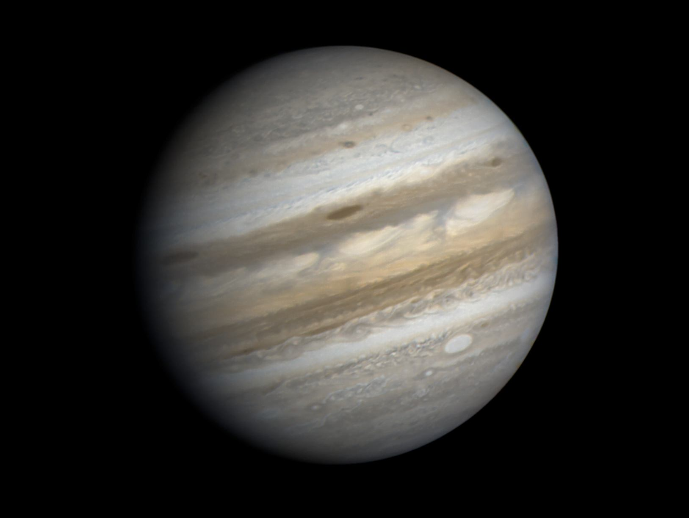
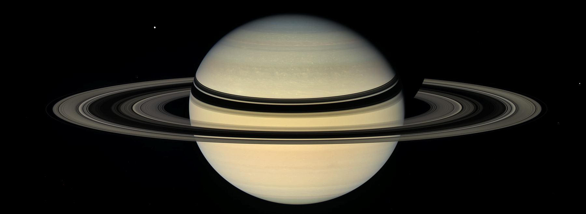
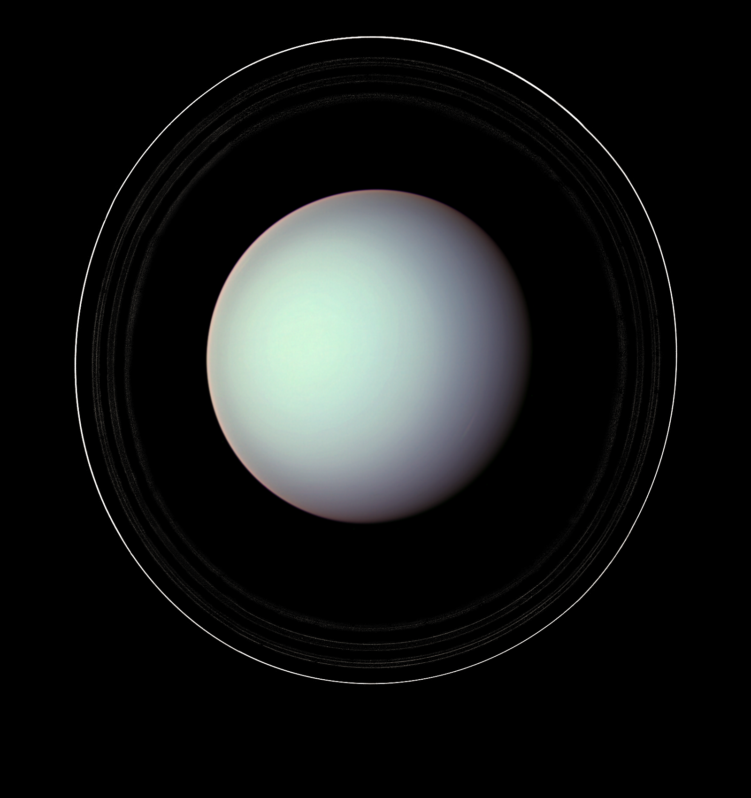
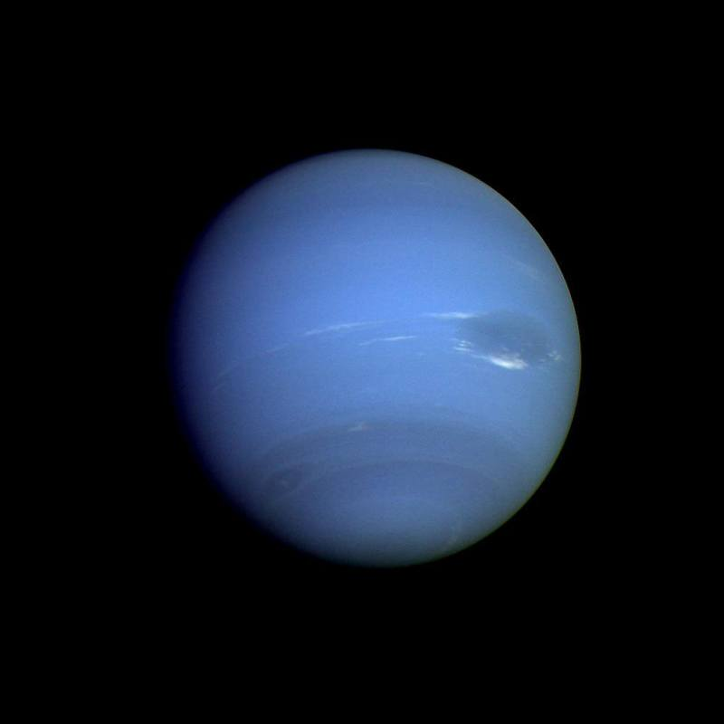

Планеты — гиганты
Существуют четыре газовых гиганта, располагающихся за орбитой Марса: Юпитер, Сатурн, Уран, Нептун. Они находятся во внешней Солнечной системе. Отличаются своей массивностью и газовым составом.
Юпитер
Пятая по счёту от Солнца и крупнейшая планета нашей системы. Радиус её – 69912 км, она в 19 раз больше Земли и всего в 10 раз меньше Солнца. Год на Юпитере не самый долгий в солнечной системе, длится 4333 земных суток (неполных 12 лет). Его же собственные сутки имеют продолжительность около 10 земных часов. Точный состав поверхности планеты пока определить не удалось, однако известно, что криптон, аргон и ксенон имеются на Юпитере в гораздо больших количествах, чем на Солнце.
Существует мнение, что один из четырёх газовых гигантов на самом деле – несостоявшаяся звезда. В пользу этой теории говорит и самое большое количество спутников, которых у Юпитера много – целых 67. Чтобы представить себе их поведение на орбите планеты, нужна достаточно точная и чёткая модель солнечной системы. Самые крупные из них – Каллисто, Ганимед, Ио и Европа. При этом Ганимед является крупнейшим спутником планет во всей солнечной системе, радиус его составляет 2634 км, что на 8% превышает размер Меркурия, самой маленькой планеты нашей системы. Ио отличается тем, что является одним из трёх имеющих атмосферу спутников.
Сатурн
Вторая по размерам планета и шестая по счёту в Солнечной системе. В сравнении с остальными планетами, наиболее схожа с Солнцем составом химических элементов. Радиус поверхности равен 57350 км, год составляет 10 759 суток (почти 30 земных лет). Сутки здесь длятся немногим дольше, чем на Юпитере – 10,5 земных часов. Количеством спутников он ненамного отстал от своего соседа – 62 против 67. Самым крупным спутником Сатурна является Титан, так же, как и Ио, отличающийся наличием атмосферы. Немного меньше него по размеру, но от этого не менее известные – Энцелад, Рея, Диона, Тефия, Япет и Мимас. Именно эти спутники являются объектами для наиболее частого наблюдения, и потому можно сказать, что они наиболее изучены в сравнении с остальными.
Долгое время кольца на Сатурне считались уникальным явлением, присущим только ему. Лишь недавно было установлено, что кольца имеются у всех газовых гигантов, но у остальных они не настолько явно видны. Их происхождение до сих пор не установлено, хотя существует несколько гипотез о том, как они появились. Кроме того, совсем недавно было обнаружено, что неким подобием колец обладает и Рея, один из спутников шестой планеты.
Уран
Седьмая по счету и третья по размеру планета, радиус которой составляет 25267 км. Справедливо считается самой холодной планетой среди остальных, температура достигает -224 градусов по Цельсию. Продолжительность года — 30 685 суток в земном исчислении (почти 84 года), сутки же ненамного меньше земных – 17 с небольшим часов. Из-за сильной наклонности оси планеты, иногда создается впечатление, будто она не вращается, как остальные небесные тела нашей системы, а катится, подобно шару. Это может наблюдать любой, кого интересует астрономия, геометрическая модель солнечной системы наглядно продемонстрирует этот эффект.
Спутников у него гораздо меньше, чем у соседнего Сатурна, всего 27. Наиболее известны Титания, Ариэль, Оберон, Умбриэль и Миранда. Они не настолько крупны, как спутники.
Примечательно, что ведя наблюдения за Ураном в свой телескоп, астроном Уильям Гершель сначала не понял, что он наблюдает за планетой, будучи уверен, что он видит комету.
Нептун
Размером восьмая планета солнечной системы очень близка к своему ближайшему соседу, Урану. Радиус Нептуна равняется 24547 км. Год на планете равняется 60 190 суток (приблизительно 164 земных года). В атмосфере зафиксированы самые сильные ветра в нашей системе, скорость которых достигает 260 м/с.
По сравнению с остальными планетами-гигантами спутников у него совсем мало – всего 14. Самые известные из них – Тритон, третий в солнечной системе спутник, имеющий атмосферу, Протей и Нереида.
Примечательно, что это – единственная из планет, которая была открыта не благодаря наблюдениям, а с помощью математических расчётов.